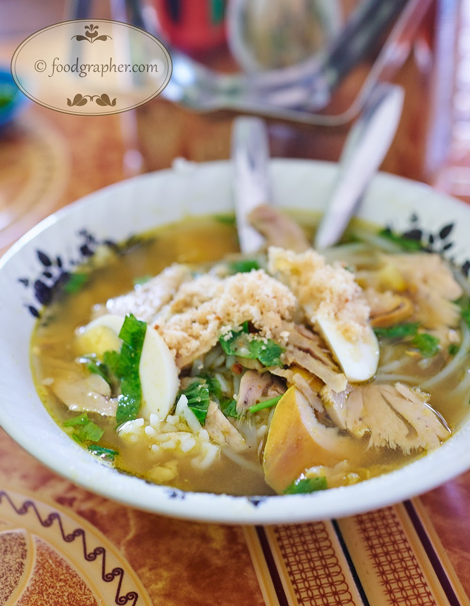

Soto Ayam
Home

Ingredients
- 5 g turmeric
- ½ tsp pepper
- 2 candlenuts
- 15 g ginger
- 3 shallot
- 2 cloves garlic
- 2 tsp salt
- 1 whole chicken with bones or 1 kg chicken parts with bones
- 200 g cabbage, thinly sliced
- 200 g bean sprouts, blanched
- 4 potatoes, steamed, peeled, deep fried until golden brown
- 2 fresh tomatoes
- 25 g sohun vermicelli, soaked in hot water for 10 minutes
- 25 g fried shallots
- 3 hard boiled eggs
- 1.8 liters chicken stock
- 3 kaffir lime leaves
- ½ stalk lemongrass
- 2 bay leaves
- 1 stalk green onion
- 25 g galangal
- 2 tbsp cooking oil
Steps
- Grind the ingredients for the spice paste together in a food processor. Stir fry the spice paste over slow fire until fragrant. Remove from the heat.
- Make soup by cooking the whole chicken with spice paste, galangal, lime leaves, lemon grass, and bay leaves in a pot for at least 30 minutes until the meat is tender. Use a pressure cooker for faster cooking time and better broth. For a traditional method, bring soup to boil, cover, and turn off heat, then let steep for 30–40 minutes—this makes the meat more tender.
- Add a little bit of salt or pepper to taste.
- Leave the chicken in a pot until the soup is cool.
- Remove the meat from the bones, and slice the meat into tiny bit size using fork and knife, then set aside.
- Put back the bones into the soup, add sliced green onion, and bring the soup to the boil right before serving.
Image is licensed under CC BY-NC-ND 3.0